침투비파괴검사산업기사 (2019-09-21 기출문제)
1과목: 비파괴검사 개론
1. 누설률을 구하는 식으로 옳은 것은? (단, P : 기체의 압력, Q : 누설률, V : 상자의 부피, t : 기체를 모으는 시간이다.)
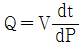
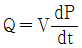
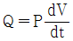
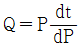
(정답률: 79%)

2. 다음 중 초음파탐상검사 시 탐상결과에 미치는 영향이 가장 적은 것은?
- 시험체의 표면이 거친 경우
- 결정 입자의 크기가 큰 경우
- 시험편의 두께가 일정한 경우
- 시험체의 탐상 표면과 저면이 평행하지 않은 경우
(정답률: 86%)
3. 비파괴검사에 대한 다음 설명 중 옳은 것은?
- 어떠한 비파괴검사 방법을 적용하여도 모든 종류의 결함을 검출할 수 있다.
- 어떠한 시험체라도 모든 종류의 비파괴검사 방법을 적용하는 것이 가능하다.
- 비파괴검사의 목적은 결함이 존재하지 않는 완벽한 제품을 제조, 판매하는데 있다.
- 비파괴검사는 재료의 물리적 성질이 결함의 존재에 의하여 변화하는 사실을 이용한다.
(정답률: 72%)
4. 다음의 비파괴검사법 중 시험체의 재질에 따른 제한을 가장 적게 받는 것은?
- 자분탐상시험
- 와전류탐상시험
- 침투탐상시험
- 방사선투과시험
(정답률: 67%)
5. 형광 침투제를 사용하여 검사하는 과정에서 현상 전에 세척이 제대로 되었는지 확인하는 방법은?
- 시험물 표면을 자연광 밑에서 관찰한다.
- 시험물 표면을 자외선등 밑에서 관찰한다.
- 시험물 표면에 현상제를 약간 도포해 본다.
- 시험물 표면을 리트머스 시험지로 문질러 본다.
(정답률: 86%)
6. 알루미늄의 질별 기호와 그 정의가 틀린 것은?
- O : 어닐링한 것
- H : 가공경화 한 것
- W : 제조한 그대로의 것
- T : 열처리에 의해 F·O·H이외의 안정한 질별로 한 것
(정답률: 75%)
7. 합금주철에서 각각의 합금원소가 주철에 미치는 영향으로 옳은 것은?
- Ni 은 탄화물의 생성을 촉진한다.
- Mo 은 인장강도, 인성을 향상시킨다.
- Cr 은 강력한 베이나이트 안정환 원소이다.
- si 는 주철 중의 Fe3C를 분해하여 흑연화를 저지하는 원소이다.
(정답률: 68%)
8. 냉간 가공한 금속을 풀림(annealing)하였을 때 내부 조직의 변화를 순서대로 나열한 것은?
- 재결정 → 회복 → 결정립 성장
- 결정립 성장 → 재결정 → 회복
- 회복 → 결정립 성장 → 재결정
- 회복 → 재결정 → 결정립 성장
(정답률: 67%)
9. Ni-Cr 강에서 발생하는 결함 중 헤어 크랙(hair crack)의 주요 원인이 되는 원소는?
- S
- O
- N
- H
(정답률: 62%)
10. 다음 중 비중이 가장 큰 금속은?
- Ti
- Pt
- Cu
- Mg
(정답률: 62%)
11. 수소저장합금에 대한 설명으로 틀린 것은?
- 수소저장합금은 수소가스와 반응하여 금속수소화물이 된다.
- 금속수소화물은 단위부피(1cm3) 중에 1022 개의 수소원자를 포함한다.
- 수소저장합금은 수소를 흡수·저장할 때에는 수축하고, 방출할 때에는 팽창한다.
- 수소가스를 액화시키는 데에는 –253℃ 정도의 저온 저장 용기가 필요하다.
(정답률: 77%)
12. 강의 담금질성을 개선시키는데 영향력이 가장 큰 원소는?
- Cu
- Ni
- Si
- B
(정답률: 67%)
13. 황동의 내식성을 개선하기 위하여 7 : 3 황동에 주석을 1% 정도 첨가한 합금은?
- 톰백
- 니켈 황동
- 네이벌 황동
- 애드미럴티 황동
(정답률: 64%)
14. 정련된 용강을 레이들 중에서 Fe-Mn, Fe-Si, Al 등으로 완전 탈산시킨 강괴는?
- 킬드강
- 림드강
- 캡드강
- 세미킬드강
(정답률: 80%)
15. 소결 제품인 MK강이라고도 불리는 알니코 자석강의 주성분은?
- Mn, Ti, Al
- W, Co, Cr
- Ni, Al, Co
- Mo, Cr, W
(정답률: 80%)
16. 다음 중 서브머지드 아크 용접(SAW)에 사용되는 용융형 용제(Fused Flux)의 특징으로 틀린 것은?
- 흡습성이 없다.
- 비드 외관이 아름답다.
- 합금원소의 첨가가 용이하다.
- 미용융 용제는 다시 사용이 가능하다.
(정답률: 39%)
17. TIG 용접에 사용되는 전극봉 재료의 구비조건으로 틀린 것은?
- 용융점이 높을 것
- 열전도성이 좋을 것
- 전자 방출이 잘 될 것
- 전기 저항률이 높을 것
(정답률: 72%)
18. 피복 아크 용접에서 용접 입열을 구하는 공식은? (단, H : 용접입열, E : 아크전압, I : 아크전류, V : 용접속도 이다.)
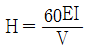
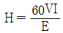
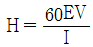
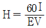
(정답률: 63%)
19. 필릿 용접의 기본 기호로 맞는 것은?
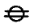
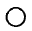
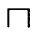
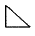
(정답률: 72%)
20. 용접 후 잔류응력을 완화시키는 방법으로 가장 거리가 먼 것은?
- 피닝법
- 응력제거풀림
- 고온 응력 완화법
- 기계적 응력 완화법
(정답률: 52%)
2과목: 침투탐상검사 원리 및 규격
21. 자외선조사장치에서 고압수은등의 파장이 320 nm 이하의 광선을 차단하는 주된 이유는?
- 인체에 유해하므로
- 형광을 발산시키지 않으므로
- 제품의 성질을 변화시키므로
- 결함지시모양의 식별이 곤란하므로
(정답률: 77%)
22. 시험체 및 탐상제의 온도에 대한 바른 설명은?
- 낮은 온도에서는 침투액의 점성이 높아진다.
- 높은 점성은 미세한 틈의 침투속력을 증가시킨다.
- 낮은 온도에서는 침투액의 증발이 높아진다.
- 탐상제의 온도는 별다른 영향이 없다.
(정답률: 70%)
23. 침투액의 표면장력이 커지게 되면 나타나는 현상으로 틀린 것은?
- 염료와 같은 침투액 성분을 쉽게 분해한다.
- 시험체 표면과의 접촉각이 증가한다.
- 접촉각이 증가하면 시험체 표면에서 잘 분산되지 않는다.
- 시험체 표면과의 접촉면적이 커진다.
(정답률: 45%)
24. 눈으로 관찰될 수 있는 지시의 분별정도는 색채대비 비율 값으로 표시되곤 하는데 이 비율은 어느 것을 근거로 한 것인가?
- 염색이 흡수한 빛의 양에 비교하여 검사 시 나타나는 자연광의 양
- 염색이 흡수한 빛의 양에 비교하여 주위 배경에서 반사된 빛의 양
- 염색이 반사한 빛의 양에 비교하여 주위 배경에서 흡수한 빛의 양
- 염색에서 반사된 빛의 양에 비교하여 주위 배경에서 반사된 빛의 양
(정답률: 59%)
25. 침투탐상시험 시 침투액이 시험체 표면을 적시는 적심성은 어느 것과 가장 관계가 깊은가?
- 비중
- 점도
- 접촉각
- 쿨롱력
(정답률: 75%)
26. 다음 중 후유화성 침투탐상검사의 특징을 설명한 것 중 틀린 것은?
- 표면이 비교적 거친 부품의 검사에 적합하다.
- 미세 결함 검출이 가능하다.
- 유화시간이 너무 길면 불연속 검출이 어렵다.
- 수분에 의한 오염의 영향이 적다.
(정답률: 70%)
27. 다음 중 의사모양이 나타날 수 있는 경우는?
- 과잉 세척을 한 경우
- 먼지로 시험체가 오염된 경우
- 농도가 낮은 습식 현상제를 사용한 경우
- 침투처리 시 시험체의 온도가 낮은 경우
(정답률: 80%)
28. 습식 현상제의 감도가 크게 저하될 수 있는 경우는?
- 현상제의 온도가 주위 온도보다 높을 때
- 현상제가 두껍게 도포될 때
- 현상제에 부식 방지제가 첨가되었을 때
- 부품의 밀도가 높은 경우
(정답률: 70%)
29. 대형 구조물의 용접부위를 탐상할대 가장 효율적인 침투액은?
- 수세성 염색침투액
- 후유화성 형광침투액
- 용제제거성 염색침투액
- 용제제거성 형광침투액
(정답률: 49%)
30. 후유화제법으로 침투탐상검사를 하려고 한다. 일반적으로 가장 짧은 시간은?
- 침투시간
- 유화시간
- 현상시간
- 관찰시간
(정답률: 75%)
31. 침투탐상 시험방법 및 지시모양의 분류(KS B 0816)에서 결함 길이가 3mm인 바로 옆으로 1.5mm 떨어진 곳에 2mm 길이의 결함이 있을 때 침투지시모양의 길이는 얼마인가?
- 3mm
- 4.5mm
- 5mm
- 6.5mm
(정답률: 82%)
32. 침투탐상 시험방법 및 지시모양의 분류(KS B 0816)에 따른 적용할 시험방법의 선정 시 고려하여야 할 사항으로 틀린 것은?
- 시험품의 용도와 표면거칠기
- 예상결함 종류와 크기
- 탐상제의 성질
- 시험품의 밀도
(정답률: 66%)
33. 침투탐상 시험방법 및 지시모양의 분류(KS B 0816)에 의한 결함의 분류에서 독립 결함 중 선상 결함은 갈라짐 이외의 결함으로 그 길이가 나비의 몇 배 이상인 것을 말하는가?
- 2배
- 3배
- 5배
- 7배
(정답률: 82%)
34. 침투탐상 시험방법 및 지시모양의 분류(KS B 0816)에 의한 시험기록을 작성할대 시험장소에서의 기온 및 침투액의 온도를 반드시 기재햐야 하는 경우는?
- 기온이 10℃ 일 때
- 액온이 20℃ 일 때
- 기온이 30℃ 일 때
- 액온이 40℃ 일 때
(정답률: 73%)
35. 보일러 및 압력용기에 대한 침투탐상검사(ASME Sec. V Art.6)에서 최소 침투시간이 가장 긴 것은?
- 강용접부의 균열
- 플라스틱의 균열
- 알루미늄 단조품의 랩
- 세라믹의 기공
(정답률: 73%)
36. 침투탐상 시험방법 및 지시모양의 분류(KS B 0816)에서 속건식 현상제를 이용한 침투탐상시험 시 건조처리 후 현상액의 적용방법으로 틀린 것은?
- 현상제를 분무한다.
- 현상제를 붓는다.
- 현상제 속에 침지시킨다.
- 현상제를 붓칠로 적용한다.
(정답률: 42%)
37. 침투탐상 시험방법 및 지시모양의 분류(KS B 0816)에 규정된 과잉 침투액 제거제에 해당되지 않는 것은?
- 물
- 용제
- 물 분말 현탁액
- 물 베이스 유화제
(정답률: 64%)
38. 침투탐상 시험방법 및 지시모양의 분류(KS B 0816)에 의한 시험의 조작에 대한 설명 중 틀린 것은?
- 전처리한 후에는 용제, 세척액, 수분 등을 충분히 건조시켜야 한다.
- 침투처리 시 표면에 부착되어 있는 잉여침투액은 유화처리나 세척처리 후에 배액하여야 한다.
- 물베이스 유화제를 사용할 때는 유화처리 전에 물스프레이로 배액을 목적으로 한 예비 세척을 한다.
- 형광침투액을 사용한 경우의 세척처리 시 수온은 일반적으로 10 ~ 40℃ 로 한다.
(정답률: 47%)
39. 보일러 및 압력용기에 대한 침투탐상검사(ASME Sec. V Art.6)에서 침투탐상 시 조도계의 교정 최소 주기는?
- 1개월
- 3개월
- 6개월
- 1년
(정답률: 62%)
40. 침투탐상 시험방법 및 지시모양의 분류(KS B 0816)에 따른 침투탐상시험 시 샘플링검사의 경우 합격품의 표시방법으로 맞는 것은?
- P 또는 적갈색으로 표시한다.
- P 또는 황색으로 표시한다.
- ⓟ 또는 적갈색으로 표시한다.
- ⓟ 또는 황색으로 표시한다.
(정답률: 58%)
3과목: 침투탐상검사 시험
41. 침투탐상검사에 사용되는 대비시험편의 용도는?
- 탐상제의 성능 및 탐상 후 결함의 지시모양을 대비하는데 사용한다.
- 조작의 적합여부의 조사 및 탐상 후 결함 크기의 기준으로 사용한다.
- 탐상제의 점검 및 검사자의 능력을 평가하는데 사용한다.
- 탐상제의 성능 및 조작방법의 적합 여부를 판정하는데 사용한다.
(정답률: 70%)
42. 시험온도 범위가 15 ~ 50℃ 일 때 일반적으로 권고되는 침투시간이 가장 짧은 시험 대상품은?
- 강 압연품
- 강 압출품
- 알루미늄 주조품
- 알루미늄 단조품
(정답률: 70%)
43. 다음 중 가스 배관의 용접부를 침투탐상검사를 하고 난 후 후처리 방법을 가장 적당한 것은?
- 유기 용제를 헝겊이나 종이수건에 적셔 닦아낸다.
- 와이어 브러쉬(wire brush)로 문지르고 물로 세척한다.
- 헝겊이나 종이수건에 물을 적셔 닦아낸다.
- 증기세척으로 닦아낸다.
(정답률: 63%)
44. 침투탐상시험으로 표면이 거친 부품을 검사하는 데 가장 적절한 방법은?
- 수세성 사용
- 후유화성 사용
- 용제제거성 사용
- 잉여침투성 사용
(정답률: 69%)
45. 다음 중 침투탐상검사로 미세한 표면균열을 탐상하기에 가장 좋은 방법은?
- 수세법
- 무현상법
- 용제법
- 후유화제법
(정답률: 72%)
46. 현상제나 침투제의 감도 시험에 사용되는 시험편은?
- 흡수지
- 균열이 있는 알루미늄 시험편
- 메니스커즈 렌즈(Meniscus Lens)
- 고압으로 모래를 분사시킨 시험편
(정답률: 80%)
47. 침투탐상 시험결과 용접 덧붙임 가장자리에서 날카롭게 선형지시로 나타나는 결함은?
- 용접 끝부 균열(Toe Crack)
- 크레이터 균열(Crater Crack)
- 연삭 균열(Grinding Crack)
- 단조 균열(Forging Crack)
(정답률: 67%)
48. 용접부의 두께가 두꺼운 맞대기 용접이음의 초층은 결함이 발생하기 쉬우므로 제2층 이후가 끝난 후 뒷면을 치핑 및 연삭한 후 침투탐상시험을 실시하는 경우가 있는데 이때 주로 검출하려고 하는 결함은?
- 기공, 슬래그
- 균열, 용입부족
- 기공, 용입부족
- 라미네이션, 균열
(정답률: 52%)
49. 침투탐상장치의 일반적 구비조건에 해당되지 않는 것은?
- 관리가 용이할 것
- 조작이 간단하고 안전할 것
- 검사를 신속하게 실시할 수 있을 것
- 결함의 크기를 정확히 검출할 수 있을 것
(정답률: 64%)
50. 침투탐상검사에서 유하처리에 대한 내용으로 틀린 것은?
- 유화제의 적용시간은 길수록 좋다.
- 유화제의 양은 적정량을 사용한다.
- 유화제의 적용은 분무법으로 부드럽게 적용한다.
- 유성 침투액에 유화제를 적용하여 이것을 수세 가능한 상태로 하는 것이다.
(정답률: 84%)
51. 다공성의 세라믹 재료로서 고온에 방치되었던 제품의 검사 방법으로 효과적인 것은?
- 여과입자법(Filtered Particle Method)
- 하전입자법(Electrified Particle Method)
- 응력도료법(Brittle Coating Method)
- 유화성 색채 대비법(Emulsifiable Color Contrast Method)
(정답률: 61%)
52. 검사표면에서 자외선강도에 영향을 미치는 요인이라고 볼 수 없는 것은?
- 전구 또는 필터의 오염
- 검사장소에서의 주위 광선
- 검사원의 옷이나 손에 묻은 형광 침투제
- 암실 내에 보관하고 있는 건식현상제의 양
(정답률: 76%)
53. 침투탐상시험의 현상처리를 실시하는 경우 다음 중 온도관리와 시간관리 문제가 가장 중요한 현상법은?
- 건식현상법
- 습식현상법
- 속건식현상법
- 무현상법
(정답률: 55%)
54. 용접부의 침투탐상검사 시 전처리할 때 일반적으로 이용되는 방법이 아닌 것은?
- 솔질
- 산세척
- 연삭
- 용제세척
(정답률: 73%)
55. 침투탐상검사 결과를 판독할대 길이가 나비의 5배인 관련지시 모양을 발견했다. 이 지시의 분류로 적당한 것은?
- 원형지시모양
- 선형지시모양
- 타원형지시모양
- 비관련지시
(정답률: 74%)
56. 그림에서 B형 대비시험편의 황동판 위에 코팅제로 사용한 재료 (A), (B) 의 조합으로 옳은 것은?
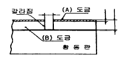
- (A) : 크롬, (B) : 니켈
- (A) : 니켈, (B) : 크롬
- (A) : 몰리브덴, (B) : 니켈
- (A) : 니켈, (B) : 몰리브덴
(정답률: 67%)
57. 침투탐상검사에 사용되는 현상제의 조건에 해당하지 않는 것은?
- 흡출작용이 강해야 한다.
- 얇고 균일하게 도포될 수 있어야 한다.
- 작업자에게 해로움을 주는 성분이 없어야 한다.
- 형광침투액과 함께 사용할 때 형광성이 있어야 한다.
(정답률: 77%)
58. 상온에서 침투탐상시험법으로 세라믹 제품의 균열을 검출하려고 한다. 다음 중 적당한 침투시간은?
- 1분
- 5분
- 20분
- 25분
(정답률: 84%)
59. 침투 탐상제 중 물 오염의 영향이 비교적 적은 것은?
- 침투제
- 유화제
- 용제세척제
- 건식현상제
(정답률: 56%)
60. 자외선조사등의 전면에 자외선 필터가 부착되어 있는 이유로 틀린 것은?
- 필터가 없으면 390nm 이상의 광선은 결함지시모양을 식별하는데 나쁘기 때문
- 필터는 불필요한 파장의 광선을 제거해주기 때문
- 330nm 이하의 광선은 인체에 유해하므로 이 파장의 광선을 차단할 필요가 있기 때문
- 필터를 통하여 백색광을 자외선으로 바꾸어주기 때문
(정답률: 59%)